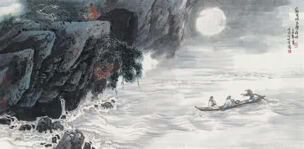

念奴娇·赤壁怀古
苏轼 〔宋代〕
大江东去，浪淘尽，千古风流人物。
故垒西边，人道是，三国周郎赤壁。
乱石穿空，惊涛拍岸，卷起千堆雪。
江山如画，一时多少豪杰。
遥想公瑾当年，小乔初嫁了，雄姿英发。
羽扇纶巾，谈笑间，樯橹灰飞烟灭。
故国神游，多情应笑我，早生华发。
人生如梦，一尊还酹江月。
故垒西边，人道是，三国周郎赤壁。
乱石穿空，惊涛拍岸，卷起千堆雪。
江山如画，一时多少豪杰。
遥想公瑾当年，小乔初嫁了，雄姿英发。
羽扇纶巾，谈笑间，樯橹灰飞烟灭。
故国神游，多情应笑我，早生华发。
人生如梦，一尊还酹江月。
译文及注释
译文：
大江之水滚滚不断向东流去，滔滔巨浪淘尽千古英雄人物。那旧营垒的西边，人们说那就是三国时周郎大破曹兵的赤壁。岸边乱石林立，像要刺破天空，惊人的巨浪拍击着江岸，激起的浪花好似千万堆白雪。雄壮的江山奇丽如图画，一时间涌现出多少英雄豪杰。
遥想当年的周瑜春风得意，小乔刚刚嫁给了他做妻子，英姿雄健风度翩翩神采照人。手摇羽扇头戴纶巾，谈笑之间，就把强敌的战船烧得灰飞烟灭。如今我身临古战场神游往昔，可笑我有如此多的怀古柔情，竟如同未老先衰般鬓发斑白。人生犹如一场梦，且洒一杯酒祭奠江上的明月。
遥想当年的周瑜春风得意，小乔刚刚嫁给了他做妻子，英姿雄健风度翩翩神采照人。手摇羽扇头戴纶巾，谈笑之间，就把强敌的战船烧得灰飞烟灭。如今我身临古战场神游往昔，可笑我有如此多的怀古柔情，竟如同未老先衰般鬓发斑白。人生犹如一场梦，且洒一杯酒祭奠江上的明月。
注释：
大江：指长江。
遥想：形容想得很远；回忆。
故垒：过去遗留下来的营垒。
雄姿英发（fā）：谓周瑜体貌不凡，言谈卓绝。英发，谈吐不凡，见识卓越。
羽扇纶（guān）巾：古代儒将的便装打扮。羽扇，羽毛制成的扇子。纶巾，青丝制成的头巾。
樯橹（qiánglǔ）：这里代指曹操的水军战船。樯，挂帆的桅杆。橹，一种摇船的桨。“樯橹”一作“强虏”，又作“樯虏”，又作“狂虏”。
故国神游：“神游故国”的倒文。故国：这里指旧地，当年的赤壁战场。
尊：同“樽”，酒杯。
一尊还（huán）酹（lèi）江月：古人祭奠以酒浇在地上祭奠。这里指洒酒酬月，寄托自己的感情。
强虏：强大之敌，指曹军。虏：对敌人的蔑称。
遥想：形容想得很远；回忆。
故垒：过去遗留下来的营垒。
雄姿英发（fā）：谓周瑜体貌不凡，言谈卓绝。英发，谈吐不凡，见识卓越。
羽扇纶（guān）巾：古代儒将的便装打扮。羽扇，羽毛制成的扇子。纶巾，青丝制成的头巾。
樯橹（qiánglǔ）：这里代指曹操的水军战船。樯，挂帆的桅杆。橹，一种摇船的桨。“樯橹”一作“强虏”，又作“樯虏”，又作“狂虏”。
故国神游：“神游故国”的倒文。故国：这里指旧地，当年的赤壁战场。
尊：同“樽”，酒杯。
一尊还（huán）酹（lèi）江月：古人祭奠以酒浇在地上祭奠。这里指洒酒酬月，寄托自己的感情。
强虏：强大之敌，指曹军。虏：对敌人的蔑称。
作品赏析
此词怀古抒情，写自己消磨壮心殆尽，转而以旷达之心关注历史和人生。上阕以描写赤壁矶风起浪涌的自然风景为主，意境开阔博大，感慨隐约深沉。起笔凌云健举，包举有力。将浩荡江流与千古人事并收笔下。
千古风流人物既被大浪淘尽，则一己之微岂不可悲？然而苏轼却另有心得：既然千古风流人物也难免如此，那么一己之荣辱穷达复何足悲叹！人类既如此殊途而同归，则汲汲于一时功名，不免过于迂腐了。接下两句切入怀古主题，专说三国赤壁之事。“人道是“三字下得极有分寸。赤壁之战的故地，争议很大。一说在今湖北蒲圻县境内，已改为赤壁市。但今湖北省内有四处地名同称赤壁者，另三处在黄冈、武昌、汉阳附近。苏轼所游是黄冈赤壁，他似乎也不敢肯定，所以用“人道是“三字引出以下议论。
“乱石”以下五句是写江水腾涌的壮观景象。其中“穿“、“拍“、“卷“等动词用得形象生动。“江山如画“是写景的总括之句。“一时多少豪杰“则又由景物过渡到人事。
苏轼重点要写的是“三国周郎“，故下阕便全从周郎引发。换头五句写赤壁战争。与周瑜的谈笑论战相似，作者描写这么一场轰轰烈烈的战争也是举重若轻，闲笔纷出。从起句的“千古风流人物“到”一时多少豪杰“再到“遥想公瑾当年“，视线不断收束，最后聚焦定格在周瑜身上。然而写周瑜却不写其大智大勇，只写其儒雅风流的气度。
不留意的人容易把“羽扇纶巾“看作是诸葛亮的代称，因为诸葛亮的装束素以羽扇纶巾著名。但在三国之时，这是儒将通常的装束。宋人也多以“羽扇”代指周瑜，如戴复古《赤壁》诗云：“千载周公瑾，如其在目前。英风挥羽扇，烈火破楼船。”
苏轼在这里极言周瑜之儒雅淡定，但感情是复杂的。“故国“两句便由周郎转到自己。周瑜破曹之时年方三十四岁，而苏轼写作此词时年已四十七岁。孔子曾说：“四十五十而无闻焉，斯亦不足畏也已。“苏轼从周瑜的年轻有为，联想到自己坎坷不遇，故有“多情应笑我“之句，语似轻淡，意却沉郁。但苏轼毕竟是苏轼，他不是一介悲悲戚戚的寒儒，而是参破世间宠辱的智者。所以他在察觉到自己的悲哀后，不是像南唐李煜那样的沉溺苦海，自伤心志，而是把周瑜和自己都放在整个江山历史之中进行观照。在苏轼看来，当年潇洒从容、声名盖世的周瑜现今又如何呢?不是也被大浪淘尽了吗。这样一比，苏轼便从悲哀中超脱了。“人生到处知何似，应似飞鸿踏雪泥。泥上偶然留指爪，鸿飞那复计东西“(《和子由渑池怀旧》)。所以苏轼在与周瑜作了一番比较后，虽然也看到了自己的政治功业无法与周瑜媲美，但上升到整个人类的发展规律和普遍命运，双方其实也没有什么大的差别。有了这样深沉的思索，遂引出结句“人生如梦，一尊还酹江月”的感慨。正如他在《西江月》词中所说的那样：“世事一场大梦，人生几度秋凉。”消极悲观不是人生的真谛，超脱飞扬才是生命的壮歌。既然人间世事恍如一梦，何妨将尊酒洒在江心明月的倒影之中，脱却苦闷，从有限中玩味无限，让精神获得自由。其同期所作的《赤壁赋》于此说得更为清晰明断：“惟江上之清风，与山间之明月，耳得之而为声，目遇之而成色。取之无禁，用之不竭，是造物者之无尽藏也，而吾与子之所共适也。”这种超然远想的文字，宛然是《庄子?齐物论》思想的翻版。但庄子以此回避现实，苏轼则以此超越现实。
千古风流人物既被大浪淘尽，则一己之微岂不可悲？然而苏轼却另有心得：既然千古风流人物也难免如此，那么一己之荣辱穷达复何足悲叹！人类既如此殊途而同归，则汲汲于一时功名，不免过于迂腐了。接下两句切入怀古主题，专说三国赤壁之事。“人道是“三字下得极有分寸。赤壁之战的故地，争议很大。一说在今湖北蒲圻县境内，已改为赤壁市。但今湖北省内有四处地名同称赤壁者，另三处在黄冈、武昌、汉阳附近。苏轼所游是黄冈赤壁，他似乎也不敢肯定，所以用“人道是“三字引出以下议论。
“乱石”以下五句是写江水腾涌的壮观景象。其中“穿“、“拍“、“卷“等动词用得形象生动。“江山如画“是写景的总括之句。“一时多少豪杰“则又由景物过渡到人事。
苏轼重点要写的是“三国周郎“，故下阕便全从周郎引发。换头五句写赤壁战争。与周瑜的谈笑论战相似，作者描写这么一场轰轰烈烈的战争也是举重若轻，闲笔纷出。从起句的“千古风流人物“到”一时多少豪杰“再到“遥想公瑾当年“，视线不断收束，最后聚焦定格在周瑜身上。然而写周瑜却不写其大智大勇，只写其儒雅风流的气度。
不留意的人容易把“羽扇纶巾“看作是诸葛亮的代称，因为诸葛亮的装束素以羽扇纶巾著名。但在三国之时，这是儒将通常的装束。宋人也多以“羽扇”代指周瑜，如戴复古《赤壁》诗云：“千载周公瑾，如其在目前。英风挥羽扇，烈火破楼船。”
苏轼在这里极言周瑜之儒雅淡定，但感情是复杂的。“故国“两句便由周郎转到自己。周瑜破曹之时年方三十四岁，而苏轼写作此词时年已四十七岁。孔子曾说：“四十五十而无闻焉，斯亦不足畏也已。“苏轼从周瑜的年轻有为，联想到自己坎坷不遇，故有“多情应笑我“之句，语似轻淡，意却沉郁。但苏轼毕竟是苏轼，他不是一介悲悲戚戚的寒儒，而是参破世间宠辱的智者。所以他在察觉到自己的悲哀后，不是像南唐李煜那样的沉溺苦海，自伤心志，而是把周瑜和自己都放在整个江山历史之中进行观照。在苏轼看来，当年潇洒从容、声名盖世的周瑜现今又如何呢?不是也被大浪淘尽了吗。这样一比，苏轼便从悲哀中超脱了。“人生到处知何似，应似飞鸿踏雪泥。泥上偶然留指爪，鸿飞那复计东西“(《和子由渑池怀旧》)。所以苏轼在与周瑜作了一番比较后，虽然也看到了自己的政治功业无法与周瑜媲美，但上升到整个人类的发展规律和普遍命运，双方其实也没有什么大的差别。有了这样深沉的思索，遂引出结句“人生如梦，一尊还酹江月”的感慨。正如他在《西江月》词中所说的那样：“世事一场大梦，人生几度秋凉。”消极悲观不是人生的真谛，超脱飞扬才是生命的壮歌。既然人间世事恍如一梦，何妨将尊酒洒在江心明月的倒影之中，脱却苦闷，从有限中玩味无限，让精神获得自由。其同期所作的《赤壁赋》于此说得更为清晰明断：“惟江上之清风，与山间之明月，耳得之而为声，目遇之而成色。取之无禁，用之不竭，是造物者之无尽藏也，而吾与子之所共适也。”这种超然远想的文字，宛然是《庄子?齐物论》思想的翻版。但庄子以此回避现实，苏轼则以此超越现实。
创作背景
这首词是宋神宗元丰五年（公元1082年）苏轼谪居黄州时所写，当时作者四十五岁，因“乌台诗案”被贬黄州已两年余。苏轼由于诗文讽喻新法，为新派官僚罗织论罪而被贬，心中有无尽的忧愁无从述说，于是四处游山玩水以放松情绪。正巧来到黄州城外的赤壁（鼻）矶，此处壮丽的风景使作者感触良多，更是让作者在追忆当年三国时期周瑜无限风光的同时也感叹时光易逝，因写下此词。